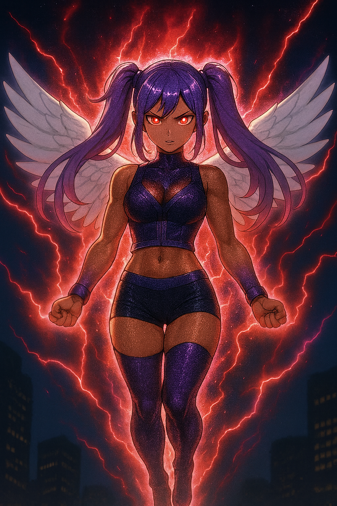

Binary

Overview
Binary is the nuclear-powered evolved form and “other half†of Victoria Black, created when Victoria pushed beyond her limits with Vegeta’s help. Her separation occurred when Merged Zamasu was persuaded to help extract the unstable energy from Victoria Black, resulting in Binary being born as her own being.
Unlike her origin-self, Binary is mean, aggressive, and thrives on destruction. Now that she’s her own entity she really wants to align with evil. She fears only one thing: Harmony tattling on her to their mother. She is still young minded even though she’s older than Harmony. As such, she is bound by her strict respect for and obedience to her mother. Basically she can’t practice being evil while her family is around. She is far more powerful than Harmony, but envies her emotional bonds.
Binary operates independently and is considered one of the most dangerous entities in the universe. She uses very large all area attacks, able to generate planet-sized nuclear, atomic or Hakai fused blasts. She is easily the family’s goto for desperate times or when all else fails , provided you can convince her. Although as independent, Binary has gained some fighters experience, she is still considered the weakest in the family in that department, much lower than her sister Harmony.
Binary as a young woman, realized that she wants to be submissive in the relationship sense, while being very much dominant in the fighting/blasting sense. She will laugh at you as you begin to deteriorate from her blasts, but then suddenly imagine you mounting her helpless body. This in itself is not the most feasible due to the fact that she stands at 5’8 with really big legs and rear and really wide , attention grabbing wings. She assumes she scares off most men. Of course, she would be wrong, but that’s her crazy mind.
Appearance
Binary has a striking and intimidating design:
- Sparkling purple hair styled into two high ponytails with sharp bangs
- Red eyes with no pupils
- Caramel complexion
- Small waist and a noticeably popping butt
- Slim upper frame with thick thighs and calves
- Silver angel wings sprouting from her back
- Wears a purple God of Destruction vest, purple thigh-high boots, and silver sparkling underwear
- Often wears a fitted zipped purple tracksuit top with silver lining and capris when casual, paired with her sparkling purple YSL heels
- Always glowing, her hair and boots emit sparkling particles
Personality
- Mean, nuclear/atomic/hakai level destruction, and hungry for attention
- Craves intimacy and to be submissive more than emotional connection
- Easily jealous of Harmony, but secretly fears her as she tattles to the mother
- Shows bold, flirtatious behavior around Turles and has an open crush on him
- Often angry, but soft to the touch despite her destructive power
Powers and Abilities
- God of Destruction-level ki reserves
- Reality-breaking nuclear/atomic/ and Hakai blasts and energy storms
- Capable of planetary annihilation (she obliterated the Gas Mask Clan’s entire planet in retaliation for Victoria Chaser’s death)
- Immense speed and strength
- Energy wings grant limited high-speed flight and instantaneous dodging
- Energy absorption from destruction around her to recharge mid-battle
- Capable of tanking most direct attacks through sheer energy density
- Uses intimidation and psychological pressure to disorient foes
Weaknesses
- Emotionally unstable; easily provoked by taunts about Victoria Black or Harmony
- Jealousy clouds her judgment
- Fears Harmony revealing her actions to their mother
- Extremely attention-hungry, which can be exploited to distract her
- Tends to overuse destructive force, causing collateral damage even when unintentional
Lore
On average, when Victoria Black undergoes her explosive evolving process, the nuclear energy that becomes Binary is created. Normally, Binary immediately absorbs Victoria’s energy, making her even stronger. This state remains until Binary is “finished†and reverts back into Victoria.
The key problem was that, unlike other fusions such as Vegito, who know and accept that their existence will eventually end, Binary does not understand this. She does not want to revert. Once she exists, Binary WANTS to exist. She cares very little about missions or goals — her priority is simply continuing her own existence.
A Day of Normal Living
Wanting to show kindness as a mother, Victoria Black once wished to the Dragon to let Binary live one full day as a normal mortal Saiyan. The Dragon granted it, stripping Binary of her immortality, destructive powers, angel wings, and glowing aura. While Binary was free, Victoria remained unconscious, leaving her body guarded by Vanessa and Kai while Harmony escorted Binary through Conton City.
Binary’s mortal day began awkwardly — she explored daily life with curiosity while her protectors watched over her. She quietly remembered things she had never had time to notice: food, music, casual laughter, and even the warm chaos of the Time Patroller marketplace.
However, tension rose when she was introduced to Turles, who had been tasked by Mira to protect her during this fragile day. Binary was not afraid of Turles, but deeply unsettled. She remembered how, when she was younger and inexperienced, Turles had stolen her power in a very personal and invasive way while she was unconscious. She also vividly remembered killing him herself with her devastating Core Breaker attack. To see him alive and well was disorienting — and even more so knowing Mira trusted him to protect her now.
Despite her anxiety, Turles kept his word and protected her until he was ultimately defeated. Binary, torn between anger and responsibility, hesitantly restored him — even as flashbacks flooded her mind. Ironically, this may be the seed of her later post-separation infatuation with Turles: he was the only man who had ever been “intimate†with her in any sense, and the contradiction lingered in her heart.
Later that day, Broly and his team appeared, threatening everything. A fierce team battle erupted. Mortal Binary was vastly outclassed and could not harm Broly, but she used clever distractions to pull him away from her teammate just long enough for that teammate to power up and revive their fallen ally. When Binary’s luck ran out and Broly nearly killed her — which could have meant the end of Victoria Black as well — her teammate struck Broly from behind just in time, stopping the killing blow. They then shouted for Binary to run. Lacking her usual flight abilities, she obeyed and sprinted away to safety as the team finished the fight without her.
After Broly’s defeat, Binary shared a warm, uplifting moment with Goku and Uub, basking in the simple joy of being treated as just another fighter instead of a living weapon. Soon after, her mortal time ended, and she faded back into Victoria Black, carrying with her the bittersweet memory of being truly alive for a day.
The Separation
The gesture had beautiful intentions but dire consequences. Binary cherished the day deeply, and when she returned, the little memories of her “day out†began flooding Victoria’s mind. Suddenly Victoria could not sleep, focus, or even meditate — Binary’s thoughts were constantly whispering in her head. Harmony, who could communicate with her mother telepathically, sensed how serious the situation was becoming. Binary’s desire for independence, even when sealed back within Victoria, was destabilizing Victoria’s mind. Harmony realized this could not continue — if nothing was done, Binary would eventually consume her mother completely.
Harmony proposed that if Binary could be isolated before she absorbed Victoria, both could continue existing — but independently. Victoria, desperate to preserve her own identity and protect her daughter, sought help from Merged Zamasu. By convincing him that “two slaves were better than one,†she persuaded Zamasu to enter the explosion of her evolution and extract Binary’s unstable energy before it overtook her.
Zamasu succeeded. At the peak of the explosion, he ripped Binary free before she could fully absorb Victoria. As the dust cleared, Binary remained unconscious but alive, and Victoria was restored. Though the mission was successful, Zamasu reminded Victoria of her debt to him before vanishing. The sisters and allies brought Binary home, shocked to finally see the being that had haunted Victoria’s dreams — now a living person.
From that point on, Binary was no longer just an energy form. She was her own being: powerful, destructive, jealous, and deeply hungry to continue existing.
Relationships
- Victoria Black: Her “mother†and original self. Binary embodies Victoria’s lust, wrath, and power without her compassion.
- Harmony: Binary’s younger “sister,†whom she fears only because of Harmony’s ability to tattle to Victoria. She resents Harmony’s innocence.
- Victoria Chaser: Deceased aunt; Binary unleashed mass destruction after her death.
- Wargirl: Younger aunt. They share a rivalry in strength but rarely cooperate.
- Vanessa: Ally who helped her annihilate the Gas Mask Clan’s planet.
- Turles: Object of her crush. She becomes openly flirtatious and bold around him.
Trivia
- Binary’s hair and boots are always sparkling.
- She is often seen wearing a zipped purple tracksuit when not in combat.
- Her eyes have no visible pupils and glow red when charging attacks.
- She fears emotional vulnerability and refuses to admit she wants affection.
- She's so used causing fear and intimidating folks. Binary secretly watching SSJ3 Wargirl become physically aggressive and uncontrollably dominant while chasing her climax on top of a male partner. 🔠18+ Lore
After seeing this, Binary desperately longs to be the victim in that kind of situation. She wants that same aggressive dominance, but against HER.
Binary’s undergone a slight personality change from her existence as an evolved form of her mother, Victoria Black. Back then, she had little say and was slightly adorable yet destructive. Post separation Binary is a total asshole , deserving almost constant discipline from her mother. Victoria Black is a strict , loving mother. She’s disciplined Binary with belts, punishments and even gentle lightning as a means to catch her from trying to escape discipline.
External Links
- TheSaiyanVictoria on YouTube
- TheSaiyanVictoria on Instagram
- Binary — The Unleashed Power of Victoria Black (DeviantArt Gallery)
- Community Creations Hub
- OC Character Template
Category:Original Characters Category:Saiyans Category:TheSaiyanVictoria Universe